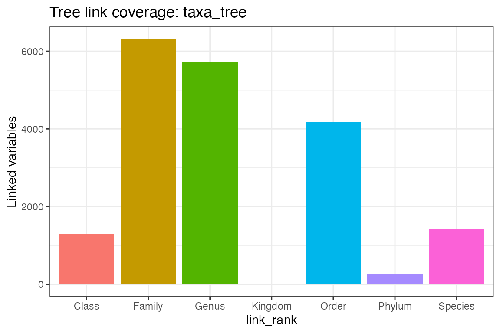
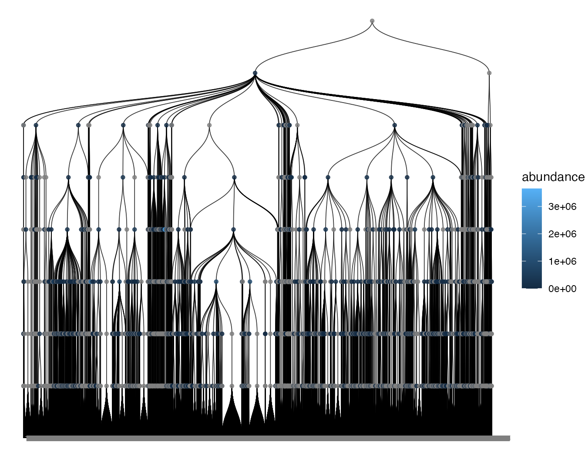

Trees, sequences, and interoperability
Xiaotao Shen xiaotao.shen@outlook.com
2026-03-04
Source:vignettes/filtering.Rmd
filtering.RmdThis article focuses on the microbiome-specific attachments that live beside the main abundance matrix.
library(microbiomedataset)
data("global_patterns", package = "microbiomedataset")
object <- convert2microbiome_dataset(convert2phyloseq(global_patterns))
object
#> --------------------
#> microbiomedataset version: 0.99.1
#> --------------------
#> 1.expression_data:[ 19216 x 26 data.frame]
#> 2.sample_info:[ 26 x 8 data.frame]
#> 3.variable_info:[ 19216 x 8 data.frame]
#> 4.sample_info_note:[ 8 x 2 data.frame]
#> 5.variable_info_note:[ 8 x 2 data.frame]
#> --------------------
#> Processing information (extract_process_info())
#> create_microbiome_dataset ----------
#> Package Function.used Time
#> 1 microbiomedataset create_microbiome_dataset() 2026-03-04 12:59:54Work with trees
Inspect tree data in tabular form:
tree_table <- melt_tree(object, tree = "taxa_tree")
head(tree_table[, 1:6])
#> tree parent node label nodeClass nodeDepth
#> 1 taxa_tree 21916 1 14368 variable_id 8
#> 2 taxa_tree 21916 2 14369 variable_id 8
#> 3 taxa_tree 21916 3 14370 variable_id 8
#> 4 taxa_tree 21916 4 14371 variable_id 8
#> 5 taxa_tree 21916 5 14372 variable_id 8
#> 6 taxa_tree 21916 6 14373 variable_id 8The object also stores explicit feature-to-tree links:
taxa_link <- extract_tree_link_data(object, tree = "taxa_tree")
head(taxa_link)
#> variable_id node node_label tree link_rank
#> 1 549322 19345 c__Thermoprotei taxa_tree Class
#> 2 522457 19345 c__Thermoprotei taxa_tree Class
#> 3 951 22594 s__Sulfolobusacidocaldarius taxa_tree Species
#> 4 244423 19343 c__Sd-NA taxa_tree Class
#> 5 586076 19343 c__Sd-NA taxa_tree Class
#> 6 246140 19343 c__Sd-NA taxa_tree Class
check_tree_link(object, tree = "taxa_tree")
#> tree has_tree has_link n_links linked_variables uncovered_variables
#> 1 taxa_tree TRUE TRUE 19216 19216 0
#> invalid_nodes duplicated_variables
#> 1 0 0
plot_tree_link(object, tree = "taxa_tree")
Plot the taxonomy tree with abundance mapped to nodes:
plot_tree(
object,
tree = "taxa_tree",
color_by = "abundance",
taxonomic_rank = "Phylum"
)
Align or prune tree attachments explicitly:
aligned_tree_object <- align_tree(object, tree = "otu_tree")
pruned_tree_object <-
prune_tree(
object,
tree = "otu_tree",
tip_label = object@variable_info$variable_id[1:100]
)
length(
extract_tree_data(
aligned_tree_object,
tree = "otu_tree",
data_type = "phylo"
)$tip.label
)
#> [1] 0
length(
extract_tree_data(
pruned_tree_object,
tree = "otu_tree",
data_type = "phylo"
)$tip.label
)
#> [1] 0If you load an older serialized object, refresh it to the current schema first:
object <- update_microbiome_dataset(object)Work with reference sequences
Add a minimal demo sequence set:
ref_seq <- Biostrings::DNAStringSet(rep("ACGT", nrow(object@variable_info)))
object <- replace_ref_seq(object, value = ref_seq)
length(extract_ref_seq(object))
#> [1] 19216Export and import FASTA:
fasta_file <- tempfile(fileext = ".fasta")
export_ref_seq(object, fasta_file)
roundtrip_seq_object <- import_ref_seq(prune_ref_seq(object, variable_id = character()), fasta_file)
file.exists(fasta_file)
#> [1] TRUE
length(extract_ref_seq(roundtrip_seq_object))
#> [1] 19216Export and import trees
tree_file <- tempfile(fileext = ".nwk")
export_tree(object, tree_file, tree = "taxa_tree", format = "newick")
tree_roundtrip <-
import_tree(
replace_tree(object, tree = "taxa_tree", value = NULL),
tree_file,
tree = "taxa_tree",
format = "newick"
)
file.exists(tree_file)
#> [1] TRUE
is.null(tree_roundtrip@taxa_tree)
#> [1] FALSE